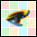
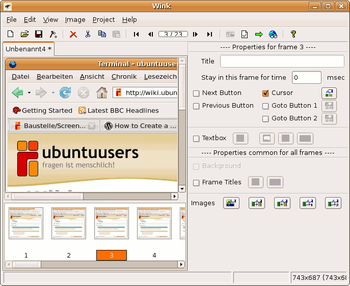

Wink
Archivierte Anleitung
Dieser Artikel wurde archiviert, da er - oder Teile daraus - nur noch unter einer älteren Ubuntu-Version nutzbar ist. Diese Anleitung wird vom Wiki-Team weder auf Richtigkeit überprüft noch anderweitig gepflegt. Zusätzlich wurde der Artikel für weitere Änderungen gesperrt.
Anmerkung: Dieses Programm gab es nur in Ubuntu 8.04.
Zum Verständnis dieses Artikels sind folgende Seiten hilfreich:

Wink  ist ein Freeware Programm zum schnellen Erstellen von Flash-Tutorials.
ist ein Freeware Programm zum schnellen Erstellen von Flash-Tutorials.
Installation¶
Wink ist unter Linux nur für x86 (i386)-Architekturen verfügbar, nicht für amd64/x86_64.
Hinweis:
In Ubuntu 10.10 kann Wink zwar aufnehmen und Filme generieren, doch Buttons und Callouts können nicht hinzugefügt werden. Fehlerbericht wink Dies ist nur mit einer alten Ubuntu-Version 7.x möglich.
|  |
| Wink |
Wink benötigt die folgende C++ Bibliothek:
libstdc++5 (universe)
 mit apturl
mit apturl
Paketliste zum Kopieren:
sudo apt-get install libstdc++5
sudo aptitude install libstdc++5
Nun Folgendes in der Komandozeile eingeben: Wink erwartet einen speziellen Namen für eine Datei, die in Ubuntu standardmäßig anders heißt. Um dieses Problem zu beheben, erstellt man einen Symbolischen Link:
sudo ln -s /usr/lib/libexpat.so /usr/lib/libexpat.so.0
Hinweis!
Zusätzliche Fremdquellen können das System gefährden.
Wink von der offiziellen Webseite herunterladen und entpacken [2]. Anschließend im Terminal [1] in das neue Verzeichnis wechseln und das Installationskript starten:
sudo ./installer.sh
Als Installationsverzeichnis sollte /opt/wink/ angegeben werden.
Wink kann aus der Schnellstartleiste gestartet werden, wenn man aus Nautilus die Datei /opt/wink/wink per Drag-und-Drop in die Schnellstartleiste zieht. Es wird ein Starter angelegt. Als Icon kann man sich das Wink-Logo herunterladen und im Installationsverzeichnis ablegen. Dieses Icon kann man nun mit Klick auf die rechte Maustaste im Starter einstellen.
Um Wink per shell direkt starten zu können, legt man sich mit dem folgenden Befehl einen symbolischen Link an:
sudo ln -s /opt/wink/wink /usr/local/bin/
Programmstart¶
Nun kann man Wink entweder per Klick auf die Schnellstartleiste starten, oder per shell über den Befehl
wink
Man beginnt eine Aufzeichnung mit dem Klick auf "Neu", stellt z.B. "1024x768" ein und als Koordinaten "0,160". Nun z.B. den Browser in die linke obere Ecke schieben, um für ein Web-Projekt ein Tutorial zu erstellen.
Nun "Minimize to Tray" anklicken, denn die empfohlene Taste Pause funktioniert leider nicht für Wink.
Nun gibt es zwei Anwendungsfälle:
Einzelne Screenshots als PDF oder HTML¶
Im Aufnahmebereich oben links den gewünschten Zustand herbeiführen (z.B. Browser an bestimmte Position scrollen) und nun im Wink-Menü mit der  auf das Wink-Icon in der Statusleiste den Menü-Eintrag "Capture Now" auswählen.
auf das Wink-Icon in der Statusleiste den Menü-Eintrag "Capture Now" auswählen.
Hat man alle Screenshots aufgenommen, wählt man im Wink-Menü "Finish Capture" an. Danach sind alle Screenshots sichtbar.
Das Ergebnis, die Einzelbilder, können so zusammengefasst als .pdf oder .html-Datei exportiert werden.
Flash-Film¶
Im Aufnahmebereich oben links den gewünschten Zustand herbeiführen (z.B. Browser an bestimmte Position scrollen) und nun im Wink-Menü mit der auf das Wink-Icon in der Statusleiste den Menü-Eintrag "Started Timed Capture" auswählen.
Nun führt man im Aufnahmebereich oben links alle Aktionen durch, die man im Film zeigen möchte. Möchte man die Aufnahme beenden, wählt man im Wink-Menü "Stop Timed Capture" an. Nun sind alle Einzelbilder sichtbar.
Um das Ergebnis als Film zu erstellen, im Menü "Project -> Settings" erst die selbe Framerate einstellen, wie in der Aufnahme. Default ist "4". Nun im Menü "Project" den Menüpunkt "Render" auswählen und der Film wird als Flash erstellt.
Buttons, Callouts und Cursor¶
Der Haupt-Zweck von Wink ist es, dem Benutzer nicht nur pure Screenshots oder einen Film ohne Erklärung zu präsentieren, sondern auch erklärende Texte anzuzeigen und den Mauszeiger zu den entsprechenden Stellen zu bewegen.
Für Details hierzu bitte vorläufig die englischsprachige Dokumentation (siehe Links) nutzen.
Fehlerbehebung¶
Sollte beim Start von Wink die Meldung
Please set the enviroment variable WINK_INSTALL_DIR to point to the directory where Wink is installed.
erscheinen, muss der Pfad zum Installationsverzeichnis von Wink noch als Umgebungsvariable WINK_INSTALL_DIR gesetzt werden.
- Erstellt mit Inyoka
-
 2004 – 2017 ubuntuusers.de • Einige Rechte vorbehalten
2004 – 2017 ubuntuusers.de • Einige Rechte vorbehalten
Lizenz • Kontakt • Datenschutz • Impressum • Serverstatus -
Serverhousing gespendet von